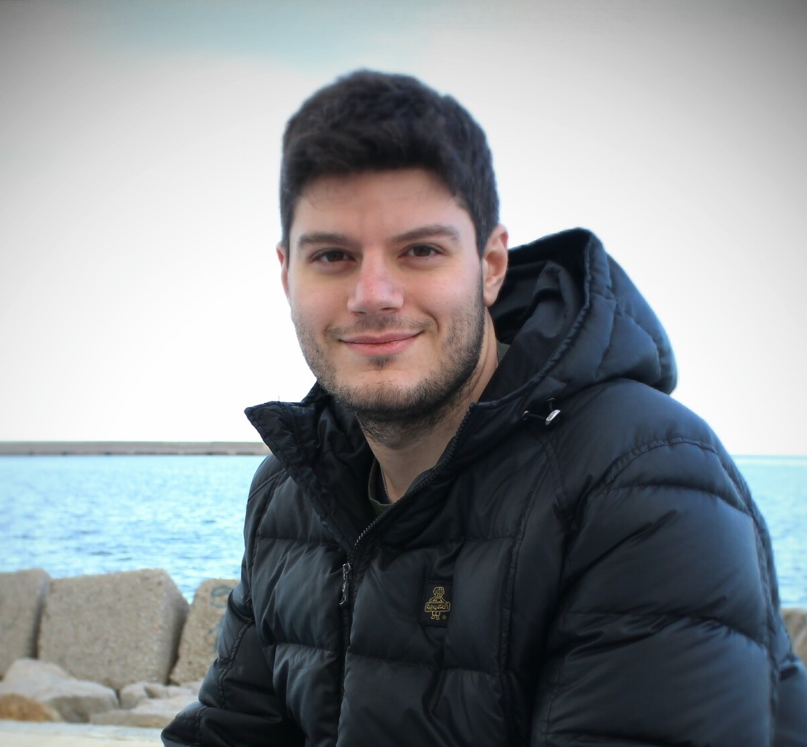

Gianluca Sottile
Università degli Studi di Palermo, Italia Department of Economics, Business and Statistics (SEAS)
University of Palermo, Italy
Sono Professore Associato di Statistica presso il Dipartimento di Scienze Economiche, Aziendali e Statistiche dell’Università degli Studi di Palermo. La mia attività scientifica si colloca nell’ambito della statistica metodologica e computazionale, con particolare riferimento a modelli penalizzati, inferenza grafica, regressione quantilica e analisi di dati funzionali e ad alta dimensionalità. I miei interessi metodologici si accompagnano ad applicazioni interdisciplinari in ambito ambientale, biomedico e genomico. Ho conseguito il dottorato in Statistica con menzione di Doctor Europaeus e ho partecipato a diversi progetti di ricerca nazionali, tra cui PRIN su modelli grafici, qualità dell’aria, asma ed eventi sismici. Sono inoltre co-inventore di un brevetto italiano nell’ambito dell’autenticazione genetica dei prodotti agroalimentari. Utilizzo abitualmente R per ricerca, didattica e sviluppo metodologico.
I am an Associate Professor of Statistics at the Department of Economics, Business and Statistics, University of Palermo. My research lies in methodological and computational statistics, with a focus on penalized models, graphical inference, quantile regression, and functional and high-dimensional data analysis. These methodological interests are accompanied by interdisciplinary applications in environmental, biomedical, and genomic research. I earned my PhD in Statistics with the Doctor Europaeus distinction and have been involved in several national research projects, including PRIN initiatives on graphical models, air pollution, asthma, and earthquake forecasting. I am also co-inventor of an Italian patent in the field of genetic authentication of agri-food products. I regularly use R for research, teaching, and methodological development.
Interessi di Ricerca Research Interests
Formazione Education
Posizioni Accademiche Academic Positions
Visiting & Fellowship Visiting & Fellowships
Onorificenze & Membresie Honors & Memberships
Didattica Teaching
Attività didattiche presso l'Università degli Studi di Palermo Teaching activities at the University of Palermo
Corsi Attuali Current Courses
Introduzione al Machine Learning
Master Universitario di Secondo Livello in Data Science per le Amministrazioni Pubbliche e Private — SEAS, UniPa.Second Level Master Data Science for Public and Private Administrations — SEAS, UniPa.
Statistical Machine Learning
Corso di Laurea Magistrale in Statistica e Data Science (LM82/LMData) — SEAS, UniPa.Master Degree in Statistics and Data Science (LM82/LMData) — SEAS, UniPa.
StatisticaStatistics
Corso di Laurea Triennale in Economia e Amministrazione Aziendale (L18) — SEAS, UniPa.BSc course in Economics and Business Administration (L18) — SEAS, UniPa.
Corsi Passati Past Courses
StatisticaStatistics
Corso di Laurea Triennale in Ingegneria Informatica (L8) — Ingegneria, UniPa.Master Degree in Statistics and Data Science (L8) — Engineering, UniPa.
Optimization for Statistical and Machine Learning
Corso di Laurea Magistrale in Statistica e Data Science (LM82) — SEAS, UniPa.Master Degree in Statistics and Data Science (LM82) — SEAS, UniPa.
Laboratorio di Mercati FinanziariFinancial Markets Laboratory
Corso di Laurea Magistrale in Statistica e Data Science (LM82) — SEAS, UniPa.Master Degree in Statistics and Data Science (LM82) — SEAS, UniPa.
StatisticaStatistics
Corso di Laurea Triennale in Disegno Industriale (L4) — Architettura, UniPa.BSc course in Industrial Design (L4) — Architecture, UniPa.
StatisticaStatistics
Corso di Laurea Triennale in Biologia/Scienze Naturali (LM6/LM60) — Scienze della Terra e del Mare, UniPa.BSc course in Biology/Natural Sciences (LM6/LM60) — Earth and Marine Sciences, UniPa.
Didattica Dottorato PhD Teaching
Statistical Machine Learning
PhD in Economics, Business and Statistics — SEAS, UniPa. January 2025 (15 hours).
An R Tutorial for Beginners
PhD program — UniPa. January–June 2020 (10 hours). Tutorial interattivo con esercizi e dataset.Interactive tutorial with exercises and datasets.
Ricerca Research
Pubblicazioni selezionate e produzione scientifica organizzata per anno Selected publications and scientific output organized by year
Software
Pacchetti R disponibili su CRAN o GitHub R packages available on CRAN or GitHub
islasso
The Induced Smoothed Lasso. Selezione di variabili tramite smoothing indotto della penalità Lasso, con stima degli errori standard e test d'ipotesi.The Induced Smoothed Lasso. Variable selection via induced smoothing of the Lasso penalty, with standard error estimation and hypothesis testing.
Qest
Quantile-Based Estimator. Metodi di stima basati sui quantili per la modellistica statistica robusta e la regressione quantilica.Quantile-Based Estimator. Quantile-based estimation methods for robust statistical modeling and quantile regression frameworks.
qrcmNP
Nonlinear and Penalized Quantile Regression Coefficients Modeling. Estende la regressione quantilica con modellizzazione non lineare e penalizzata dei coefficienti.Nonlinear and Penalized Quantile Regression Coefficients Modeling. Extends quantile regression with nonlinear and penalized coefficient modeling.
clustEff
Clusters of Effects Curves in Quantile Regression Models. Strumenti per il clustering e la visualizzazione delle curve di effetto nella regressione quantilica.Clusters of Effects Curves in Quantile Regression Models. Tools for clustering and visualizing effect curves in quantile regression analysis.
Progetti Projects
Progetti di ricerca e iniziative collaborative Research projects and collaborative initiatives
PRIN & Progetti NazionaliNational Projects
Spatio-temporal Functional Marked Point Processes for Probabilistic Forecasting of Earthquakes
PI: Prof. G. Adelfio (UniPa). ERC: PE1. Partecipazione da settembre 2024.Participation from September 2024.
COMBINERS — COmplex graphical Models for BIological NEtwoRk Science
PI: Prof. F. Stingo (UniFi). Prot. 2022SMNNKY_004 — ERC: PE1. Contributo a 2 paper su JRSS Series C sul sistema ematopoietico e su dati di qualità dell'aria.Contributed to 2 papers in JRSS Series C paper on haematopoietic system and air quality data.
BREATHE — Big data, IoT and AI for Air Pollution and Asthma Exacerbations
PI: Dr. M. Vettoretti (UniPadova). Prot. 2022EC49YC_002 — ERC: PE6. Contributo al paper su Artificial Intelligence Review su una revisione sistematica sugli approcci di machine learning per la previsione delle esarcebazioni asmatiche.Contributed to Artificial Intelligence Review paper on on a systematic review of machine learning approaches for the prediction of asthma exacerbations.
Complex Space-Time Modeling and Functional Analysis for Probabilistic Forecast of Seismic Events
PI: Prof. G. Adelfio (UniPa). Prot. 20157PRZC4_001 — ERC: PE1. Contributo al paper su Computational Statistics sui clusters di curve di effetto.Contributed to Computational Statistics paper on clusters of effects curves.
PON, PO FESR & Progetti ApplicatiApplied Projects
PROFOOD — Valorizzazione produzioni lattiero-casearie sicilianeValorization of Sicilian dairy products
PON02_00451_3133441. PI: Prof. B. Portolano (UniPa). Selezione SNP per tracciabilità di prodotti lattiero-caseari tipici siciliani. Contributo a 4 paper su genetica del bestiame.SNP selection for traceability of typical Sicilian dairy products. Contributed to 4 papers on livestock genetics.
Approccio integrato per prodotti agroalimentari sicilianiIntegrated approach for Sicilian agri-food products
F/050267/03X32 — PON Imprese e Competitività 2014-2020. PI: Dr. N. Francesca (UniPa).
Biotecnologie molecolari per filiere lattiero-casearieMolecular biotechnologies for dairy supply chains
PON01_02249. PI: Prof. B. Portolano (UniPa). Contributo al paper Livestock Science su coat color sidedness nei bovini.Contributed to Livestock Science paper on coat color sidedness in cattle.
LEO — Livestock Environment Opendata
PSRN 2014-2020, Sottomisura 16.2, PRJ-0185. PI: Prof. B. Portolano (UniPa). Contributo al paper Scientific Reports su meta-analisi di razze bovine europee.Contributed to Scientific Reports paper on European cattle breeds meta-analysis.
TRAIProL@C — Tracciabilità lattiero-casearia ovineTraceability of sheep dairy products
PO FESR 2014-2020, Misura 1.1.5. PI: Prof. M.T. Sardina (UniPa). Autenticazione e tracciabilità di prodotti lattiero-caseari ovini innovativi e monorazza.Authentication and traceability of innovative single-breed sheep dairy products.
CHASER Study — Asma infantile e ambienteChildhood Asthma and Environment
ClinicalTrial.gov NCT02433275. Coordinator: Dr. S. La Grutta. Modellizzazione della cronicità dell'asma via modelli multi-stato e a rischi competitivi. Contributo al paper JACI.Modeling asthma chronicity via multi-state and competing risks models. Contributed to JACI paper.
Divulgazione & Outreach Dissemination & Outreach
Monitoraggio Statistico dell'Epidemia COVID-19 in ItaliaStatistical Monitoring of the COVID-19 Epidemic in Italy
Sito del gruppo di ricerca con analisi e riflessioni sull'evoluzione dell'epidemia COVID-19 in Italia. Modellistica statistica per monitorare e predire l'evoluzione epidemica.Research group website providing analyses and reflections on the COVID-19 epidemic evolution in Italy. Statistical modeling to monitor and predict epidemic evolution.
Modellizzazione del Sistema microRNAModeling of the microRNA System
Creazione di modelli di interazione microRNA-target per diversi tessuti usando database pubblici (NIH-TCGA). Sviluppo di algoritmi per predire geni regolati da microRNAs.Creation of microRNA-target interaction network models for different tissues using public databases (NIH-TCGA). Development of algorithms for predicting genes regulated by microRNAs.
Talks & Conferences
Talks invitati, contributi a conferenze, poster e attività di organizzazione scientifica Invited talks, conference contributions, posters, and scientific organization
IFCS 2026 — 19th Conference Of The International Federation Of Classification Societies
Università degli Studi di Milano and Milano-Bicocca, July 14–16, 2026. Responsabile locale: Prof. F. Greselin.Local chair: Prof. F. Greselin.
JADT 2026 — 18th International Conference on Statistical Analysis of Textual Data
Università degli Studi di Palermo, July 8–10, 2026. Responsabile locale: Prof. A. Plaia.Local chair: Prof. A. Plaia.
SDS-SIS 2024 — Statistics and Data Science
Università degli Studi di Palermo, April 11–12, 2024. Responsabile locale: Prof. A. Plaia.Local chair: Prof. A. Plaia.
GRASPA-SIS 2023 — Environmental Statistics
Università degli Studi di Palermo, July 10–11, 2023. Responsabile locale: Prof. G. Adelfio.Local chair: Prof. G. Adelfio.
AMASES 2022 — Mathematics Applied to Social and Economic Sciences
Università degli Studi di Palermo, September 22–24, 2022. Responsabile locale: Prof. A. Consiglio.Local chair: Prof. A. Consiglio.
SDS 2023 — High Dimensional Data
Università degli Studi di Pavia, April 27–28, 2023. Sessione con F. Stingo, V. Vinciotti, E. Wit.Session with F. Stingo, V. Vinciotti, E. Wit.
CLADAG 2021 — Penalized Techniques for Data Analysis
Università degli Studi di Firenze, September 9–11, 2021. Sessione con M. Chiodi, P. Giudici, E.J.C. Wit.Session with M. Chiodi, P. Giudici, E.J.C. Wit.
Contatti Contact
Per collaborazioni, supervisione tesi o informazioni sui corsi Get in touch for collaborations, thesis supervision, or course information
Informazioni di Contatto Contact Information
Università degli Studi di Palermo
Viale delle Scienze Ed. 13, 90128 Palermo, Italia Department of Economics, Business and Statistics (SEAS)
University of Palermo
Viale delle Scienze Bldg. 13, 90128 Palermo, Italy